<div class="row">
    <!-- uncomment code for absolute positioning tweek see top comment in css -->
    <!-- <div class="absolute-wrapper"> </div> -->
    <!-- Menu -->
    <div class="side-menu">
    
    <nav class="navbar navbar-default" role="navigation">
    <!-- Brand and toggle get grouped for better mobile display -->
    <div class="navbar-header">
        <div class="brand-wrapper">
            <!-- Hamburger -->
            <button type="button" class="navbar-toggle">
                <span class="sr-only">Toggle navigation</span>
                <span class="icon-bar"></span>
                <span class="icon-bar"></span>
                <span class="icon-bar"></span>
            </button>

            <!-- Brand -->
            <div class="brand-name-wrapper">
                <a class="navbar-brand" href="#">
                    Brand
                </a>
            </div>

            <!-- Search -->
            <a data-toggle="collapse" href="#search" class="btn btn-default" id="search-trigger">
                <span class="glyphicon glyphicon-search"></span>
            </a>

            <!-- Search body -->
            <div id="search" class="panel-collapse collapse">
                <div class="panel-body">
                    <form class="navbar-form" role="search">
                        <div class="form-group">
                            <input type="text" class="form-control" placeholder="Search">
                        </div>
                        <button type="submit" class="btn btn-default "><span class="glyphicon glyphicon-ok"></span></button>
                    </form>
                </div>
            </div>
        </div>
        </div>


<div id="teaching-guide">
	<div id="subnav" class="row hidden-xs">
	    <ul class="list-inline col-sm-8 col-sm-offset-3">
	        <li class="col-sm-4 col-md-3"><a href="teach.html">Content Creator</a></li>
	        <li class="col-sm-4 col-md-3 col-md-offset-1"><a class="active"  href="teaching-guide.html">Teaching Guide</a></li>
	        <li class="col-sm-4 col-md-3 col-md-offset-1"><a href="content-requests.html">Content Requests</a></li>
	    </ul>
	</div>
	
</div>
    
    
   
	<section id="subheader" class="row">
	    <div class="col-sm-offset-1 col-sm-10">
	        <h1>BizFriend.ly Teaching Guide</h1>
	        <hr>
	    </div>
	    <div id="category-menu" class="col-sm-offset-1 col-sm-10">
	        <div id="tg-nav" class="row">
	            <div id="category-left" class="col-sm-6 col-md-5 col-lg-4">
	            	<ul>
	            		<li><a href="#practices">Teaching Best Practices</a></li>
	            		<li><a href="#skills">How to Add Skills</a></li>
	            		<li><a href="#services">How to Add Services</a></li>
	            		<li><a href="#lessons">How to Add Lessons</a></li>
	            	</ul>
	            </div>
	            <div id="category-right" class="col-sm-offset-1 col-sm-5">
	            	<ul>
	            		<li><a href="#governments">Creating Content for Cities and States</a></li>
	            	</ul>
	            </div>
	        </div>
	    </div>
	</section>

	<section id="main" class="row">
		<div class="col-sm-10 col-sm-offset-1">
		<hr>
		<p><h2>BizFriend.ly Core Values</h2></p>
		<ul>
			<li>We are entrepreneurs and we elevate and lift up entrepreneurs.</li>
			<li>Technology is the foundation, plain and simple. </li>
			<li>We believe in helping and empowering business owners and the community. </li>
			<li>We value growth, learning and teaching, and we foster these values every day. </li>
			<li>We are trustworthy, and believe honesty and integrity are key. </li>
			<li>We believe in peer networks and work to build these learning and sharing communities.</li>
			<li>When we say we value action we really mean it. We help entrepreneurs take action to start, run and grow their businesses each day.</li>
		</ul>
		<hr>
          <p><h2>Why should I be teaching on BizFriend.ly?</h2></p>
			<p>We believe that the pinnacle of learning is being able to teach others. Whether you are an organization that works with business owners daily, a budding entrepreneur, or a well-established business, you have skills that you’ve mastered and can now share with peers. We make it easy to teach on BizFriendl.ly so can share and gain recognition for the skills you’re best at. Before you start teaching, we recommend that you <a href="http://bizfriend.ly/learn.html">run through a few lessons</a> to see how others are already teaching on BizFriend.ly and read the guide below.</p>
<hr>
          <p><h2>What can I teach on BizFriend.ly?</h2></p>
			<p>BizFriend.ly is focused on teaching online skills to business owners. Are there things you do online everyday for your business? Help others learn how to do it too by creating new content for BizFriend.ly. There are three types of content you can add:</p>
			<ul>
				<li>Skills: Skills are broad categories that appear at the top of the <a href="http://bizfriend.ly/learn.html">Learn section</a> and have web services and lessons living within them. These include things like "promoting your business online" and "managing tasks and time."</li>
				<li>Web Services: Web services are what lessons are about, such as <a href="http://bizfriend.ly/service.html?2">Facebook</a> or <a hef="http://bizfriend.ly/service.html?4">Trello</a>. You can add any website or service, which will then allow you and everyone else in the community to create lessons about that service. </li>
				<li>Lessons: Lessons are what most people create on BizFriend.ly. They teach different parts of a web service, helping you master a skill. Lessons are the content you see in the right hand helper window when you’re learning. </li>
			</ul>
<hr>
          <p><h2 id="practices">Teaching Best Practices</h2></p>
			<ul>
				<li>Uses simple language and keep jargon to a minimum.</li>
				<li>Short sentences are helpful. </li>
				<li>Ensure a friendly tone by keeping messaging upbeat and encouraging. </li>
				<li>Lessons and steps should be kept short and simple, it’s better to create more steps or lessons than try to pack too much content into one. </li>
				<li>Cheer on and congratulate learners as they progress through steps. </li>
			</ul>
<hr>
          <p><h2 id="skills">How to Add Skills</h2></p>
			<ol>
				<li>Idea: First, come up with an idea for a skill that doesn’t exist yet on BizFriend.ly. You can check the existing skills on the <a href="http://bizfriend.ly/learn.html">Learn page</a>. </li>
				<li>Name & Description: Then, use the <a href="http://bizfriend.ly/new-category.html">skill creation form</a> to enter a skill name and a brief description of the skill and why it’s valuable to business owners. </li>
				<li>Preview: You can preview how the skill will look by clicking the "preview" button. </li>
				<li>Save as Draft: You can save the skill as a draft by clicking the "save draft" button. You can then later get back to all of your drafts via your <a href="http://bizfriend.ly/profile.html">user profile</a> under Teaching, and then clicking the "edit" button next to the skill name.</li>
				<li>Submit: When you’re ready to submit your skill, click the "submit" button. All content submitted on BizFriend.ly is licensed under a <a href="http://creativecommons.org/licenses/by-nc-sa/3.0/deed.en_US">Creative Commons Attribution - NonCommercial - ShareAlike 3.0 Unported License</a>. Your name will not appear alongside skills created on BizFriend.ly. </li>
				<li>Review: BizFriendl.ly will review the content you’ve submitted to ensure that it’s appropriate to appear for all users in the community. In the meantime, you can go ahead and create web services and lessons that are attached to that skill. You’ll see your skill on the <a href="http://bizfriend.ly/learn.html">Learn page</a> soon! </li>
			</ol>
		<hr>
          <p><h2 id="services">How to Add Web Services </h2></p>
			<ol>
				<li><span class="bold">Idea:</span> First, pick a web service or website that you frequently use that’s not already on BizFriend.ly. You can check the existing web services on the Learn page. </li>
				<li>Then, use the <a href="http://bizfriend.ly/new-service.html">web service creation form</a> to add information about the web service.</li>
				<li><span class="bold">Name & Web Address:</span> You’ll begin with some basics including the name of the web service and its web address. </li>
				<li>
					<p>Descriptions: Next you’ll add two descriptions of the service and why it’s valuable to business owners. The short description is what appears on the Learn landing page, it looks like this:</p>
					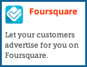
					<p>The long description appears on the service landing page, it looks like this:</p>
					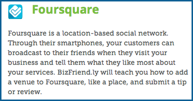
				</li>
				<li><span class="bold">Tips to Keep in Mind:</span> Then you'll add up to three key points to keep in mind. These can be tips and tricks, pointers, or words of caution. Use the "plus"  button to add more than one.</li>
				<li><span class="bold">Additional Resources:</span> Add up to five additional resource links. These can be pages provided by the web service on how to use it, such as <a href="https://www.facebook.com/business">Facebook for Business</a>, or an outside resource created by another third-party, such as <a href="http://www.sba.gov/community/discussion-boards/keith-gilabert-how-advertise-free-using-facebook">How to Advertise for Free Using Facebook by the Small Business Administration</a>. We know BizFriend.ly isn’t the only place to learn, and we want to provide additional content to help the community learn even more.  You’ll need to title the resource and also provide the web address. Use the "plus"  button to add more than one.</li>
				<li><span class="bold">Service Icon:</span> Next you’ll add an icon for the web service. It’s important that the icon is 30 pixels by 30 pixels or less. Click "choose a file" to select a file saved to your computer. </li>
				<li><span class="bold">Don’t have an icon yet?</span> We have two suggested ways to find or create one: </li>
					<ul>
						<li>Some services already have icons freely available and you can try a <a href="http://images.google.com/">Google image search</a> with the web service name to find one. Please make sure it’s legally okay to use it before uploading the icon to BizFriend.ly.</li>
						<li>If you’re skilled with Photoshop and image editing, you can use our Photoshop file that has a variety of web service icons already in it. Click the image to download .PSD file. You can also use this as a template to create new icons. You’ll need a vector of the service logo or symbol and can then duplicate one of the existing icons and edit the colors and shadow to match.</li>
						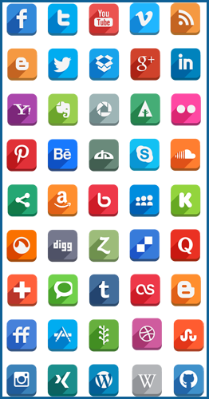
					</ul>
				<li><span class="bold">Service Video or Image:</span> There are two types of media you can add to create supporting context for the web service:</li>
					<ul>
						<li><span class="bold">Image:</span> You might want to capture the homepage or another attractive page on the web service as an image. The image should be 600 pixels by 338 pixels. Click "choose file" to upload the image from your computer. It might look like this one for Trello:</li>
						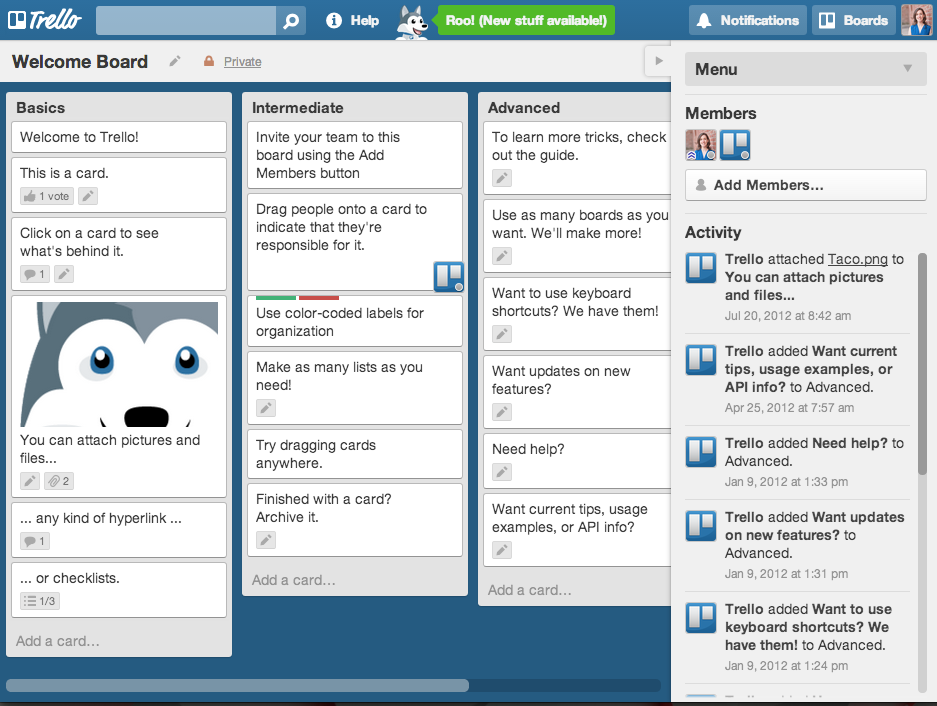
						<li><span class="bold">Video:</span> You might want to capture the webservice in a "screencast" video showing several of the key features, or create a video with yourself or other business owners talking about how they use the web service in their businesses. These are meant to encourage learning by sharing examples of real use. Please include the BizFriend.ly end frame at the end of your video (EPS, PNG). To add a video, you’ll want to first upload it to Vimeo, set the embed settings to only include the video title and set the size to 600 x 338 pixels, and then copy and paste the entire embed link into the form. The Vimeo embed settings will look like this: </li>
						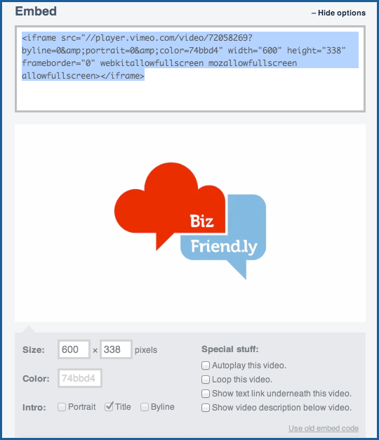
					</ul>
				<li><span class="bold">Skill:</span> The last thing you’ll need to do is assign the web service to a skill using the drop down menu. If it doesn’t match one of the existing skills, you can use the "add new skill" option in the menu. It will take you to the <a href="http://bizfriend.ly/new-category.html">skill creation form</a>. </li>
				<li><span class="bold">Preview:</span> You can preview how the web service page will look by clicking the "preview" button. </li>
				<li><span class="bold">Save as Draft:</span> You can save the web service as a draft by clicking the "save draft" button. You can then later get back to all of your drafts via your user <a href="http://bizfriend.ly/profile.html">profile</a> under Teaching, and then clicking the "edit" button next to the web service name. </li>
				<li><span class="bold">Submit:</span> When you’re ready to submit your web service, click the "submit" button. All content submitted on BizFriend.ly is licensed under a <a href="http://creativecommons.org/licenses/by-nc-sa/3.0/deed.en_US">Creative Commons Attribution - NonCommercial - ShareAlike 3.0 Unported License</a>. Your name will not appear alongside web services created on BizFriend.ly. </li>
				<li><span class="bold">Review:</span> BizFriendl.ly will review the content you’ve submitted to ensure that it’s appropriate to appear for all users in the community. In the meantime, you can go ahead and create lessons that are attached to that skill. You’ll see your web service on the <a href="http://bizfriend.ly/learn.html">Learn page</a> soon! </li>
			</ol>
<hr>
          <p><h2 id="lessons">How to Add Lessons</h2></p>
			<span class="bold">There are two types of lessons on BizFriend.ly:</span>
			<ul>
				<li>
					<p><span class="bold">Simple Steps:</span> Simple step lessons can be created for absolutely any website or web service. You’ll create a series of steps that progress the learner through the lesson by guiding them with text, images, and even opening them to the correct part of a web service.Example:</p>
				</li>
				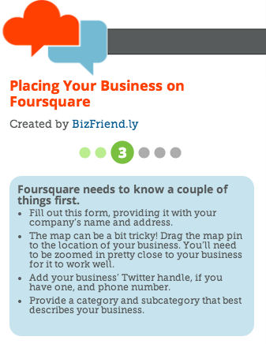
				<li>
					<p><span class="bold">Dynamic Steps:</span> These lessons are connected to the back end of web services via APIs, which allow users to be able to login and authenticate with the web service, which then allows for automatic progression through steps based on actions in the service and dynamic feedback using information from those actions. You can tell which web services have these features by seeing  the "Advanced Options" box appear in the lesson builder when one of the services is selected. Example lesson: <a href="http://bizfriend.ly/instructions.html?8">Creating a Facebook Page</a></p>
				</li>
			</ul>
			<ol>
				<li>
					<p><span class="bold">Idea:</span> First, you’ll want to come up with an idea for a lesson that doesn’t exist yet on BizFriend.ly. Your lesson will be part of a skill, such as "promoting your business online" and a web service, such as "Facebook" or "Trello." You can check out existing skills and web services on the <a href="http://bizfriend.ly/learn.html">Learn</a> page. Click on the web service that you’re lesson is about to see what content is already there. Don’t see the skill or web service that your lesson is about? You’ll want to add it using the <a href="http://bizfriend.ly/new-category.html">skill creation form</a> or <a href="http://bizfriend.ly/new-service.html">web service creation form</a>, and referring to the <a href="#skills">How to Add Skills</a> and <a href="#services">How to Add Web Services</a> instructions above. </p>
                  <p>
                    You should first draft your lesson in a word processor like Google Drive, Microsoft Word, or Text Edit. It's helpful to compose your lesson there and then just copy and paste it over to the Lesson Builder. Writing out steps might look like this:</p>
                  <div class="alert alert-info">
                  <p><i>Step 1</i></p>
                  <p><span class="bold">First, you’re going to open Doodle. Click the button below.</span></p>
[open button]: http://www.doodle.com/
                  </p>
          <p><i>Step 2</i></p>
<p><span class="bold">Click the “Schedule an event” button.</span>
                  </p>
          <p><i>Step 3</i></p>
  <p><span class="bold">At a minimum, enter the title of your event, your name, and your email address.</span>
Entering your information does not open a Doodle account, it just sends  you a link so you can easily get back to your event later.
                  </p></div>
 <p>If you'd like to see how these steps became a lesson, check out <a href="http://bizfriend.ly/instructions.html?72">Scheduling a group meeting on Trello</a>.
                  </p>
				</li>
				<li>
                  <p><span class="bold">Builder:</span> To build your lesson, you’ll use the <a href="lesson-builder.html">Lesson Builder</a>.</p>
				</li>
				<li>
					<p><span class="bold">Lesson Skill:</span> You’ll begin by selecting a skill for your lesson from the drop down menu. If it doesn’t match one of the existing skills, you can use the "add new skill" option in the menu. It will take you to the <a href="http://bizfriend.ly/new-category.html">skill creation form</a>.</p>
				</li>
				<li>
					<p><span class="bold">Lesson Web Service:</span> Next, you’ll select a web service. The web service drop down menu populates based upon the skill you pick in the menu above. If it doesn’t match one of the web services, you can use the "add new service" option in the menu. It will take you to the <a href="http://bizfriend.ly/new-service.html">web service creation form</a>.</p>
				</li>
				<li>
					<p><span class="bold">Lesson Name:</span> Click the lesson name in the build window to edit the name of your lesson. It looks like this in the build window:</p>
				</li>
				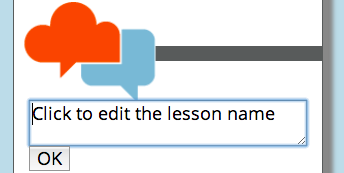
				<li>
					<p><span class="bold">Elements:</span> You’ll build steps by dragging and dropping elements from the "Elements" box to the build window.</p>
				</li>
				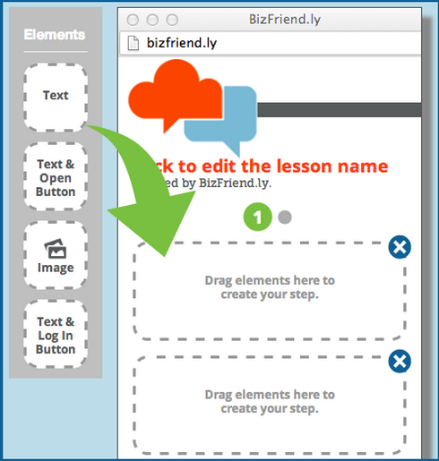
				<li>
					<p>You can add up to three element boxes per step. If one of the elements is especially long, you may only be able to add one or two elements. It’s important that the elements stay within the numbers at the top of the window and the top of the "next" and "back" buttons, indicated in light green in the diagram below.</p>
					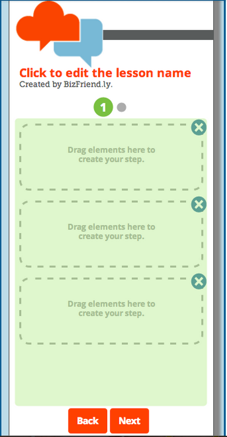

					<p>There are a variety of different elements you can add:</p>
					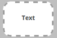
					<p>Text is the primary way to communicate what a learner should do in a step. Drag the "text" element to the build window. You can then edit the text the same way that you edited the lesson title by clicking on it. We’ve provided you with a few different text styles including a larger bold text and a smaller copy text. If you don’t use one of these, just leave it as "Click to edit." and it will automatically disappear in the actual lesson. Feel free to add some simple html tags as well. Once you’re finished entering text, you’ll want to change the color of the box by selecting one of the colors in the window attached to the text box. The different colors help learners see discrete pieces of information within a step.</p>

					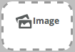
					<p>Images help add context or indicate what a learner might be looking for with a web service. Sometimes these visual guides can be more helpful that text alone. To add an image, draft the "image" element to the build window. You’ll have text that you can edit to provide instructions, and then you will click the "Choose File" button to select an image that’s saved to your computer. Images should be no larger than 250 pixels wide by 350 pixels tall. This ensures that they fit within the allotted space in the build window.</p>

					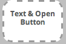
					<p>You can help the learner get to exactly the right spot within a web service by using the open button element. This is often going to be the first step to any lesson. Drag the "Text & Open Button" element to the build window and then write instruction text and change the box color. Then click the "Open" button to add the web address that the button should open.</p><br/>

					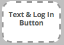
					<p>For some services, we have the ability to log the user into the web service. This will only appear for web services that have this functionality attached to them. If this option is here, you’ll want this to be the first step of your lesson so that user can authenticate with the service and we can then provide dynamic progression through the steps and dynamic feedback (see Advanced Options). Drag the "Text & Log In Button" element  to the build window and then write instruction text and change the box color. The button will work without you needing to add any information to it.</p>
				</li>
				<li>
					<p><span class="bold">Color:</span> You may want to edit the color of boxes as the different colors help learners see discrete pieces of information within a step. You can update the box color anytime by clicking the color picker icon  in any element box in the build window.</p>
				</li>
				<li>
					<p><span class="bold">Feedback:</span> For certain steps, you can provide feedback that encourages the learner and congratulates them for completing a task. You'll see the feedback window open next to the main step window in the Lesson Builder for steps where this is possible. The most popular is on a step using the open button element. Edit the feedback by clicking the text in the feedback window. You’ll want to create a headline (green text) and a short statement in the body text (gray text).  If you don’t use one of these, just leave it as "Click to edit." and it will automatically disappear in the actual lesson. The feedback appears as a modal overlay on top of the step within the helper window.</p>
				</li>
				<li>
					<p><span class="bold">Adding Steps:</span> To add more steps, click the gray "plus" button  near the step number. You can add up to twelve more steps. Use the arrows to navigate between the steps. </p>
				</li>
				<li>
					<p><span class="bold">Celebration Step:</span> The Lesson Builder automatically generates the celebration step and places it as the last step in your lesson. You can get to it using the arrows above the build window. You are able to select from a variety of icons at the top of the celebration step and also write a congratulatory message. The social icons and buttons below automatically work based on information in the system and do not require any input from the teacher.</p>
				</li>
				<li>
                  <p><span class="bold">Advanced Options:</span> This section is in prototype. For certain web services, BizFriend.ly has the ability to connect to the API and create lessons with dynamic steps. Some of the services that currently have this functionality include: Facebook, Trello, and Foursquare. When you click on "Advanced Options" you get two menus to select from. First you'll set what the step is watching. You can pick from:
                <ul>
                  <li>A new item</li>
				<li>New attribute on item</li>
				<li>Updated attribute on item</li>
				<li>Attribute equals expected value</li>
				<li>Attribute from input</li>
                  </ul>
 You'll then select what kind of item it is. This menu populates based on the web service.
                  </p>
				</li>
				<li>
					<p><span class="bold">Preview:</span> You can preview how the lesson will look by clicking the "preview" button. It will open the lesson exactly how it will appear on BizFriend.ly and you can test out all of your steps to make sure they are working properly.</p>
				</li>
				<li>
					<p><span class="bold">Save as Draft:</span> You can save the lesson as a draft by clicking the "save draft" button. You can then later get back to all of your drafts via your <a href="profile.html">user profile</a> under Teaching, and then clicking the "edit" button next to the lesson name.</p>
				</li>
				<li>
					<p><span class="bold">Submit:</span> When you’re ready to submit your lesson, click the "submit" button. All content submitted on BizFriend.ly is licensed under a <a href="http://creativecommons.org/licenses/by-nc-sa/3.0/deed.en_US">Creative Commons Attribution - NonCommercial - ShareAlike 3.0 Unported License</a>. Your name will appear alongside the lesson you’ve created on BizFriend.ly.</p>
				</li>
				<li>
					<p><span class="bold">Review:</span> BizFriendl.ly will review the content you’ve submitted to ensure that it’s appropriate to appear for all users in the community. You’ll see your lesson on BizFriend.ly soon!</p>
				</li>

<hr>
<p><h2 id="governments">Creating Content for Cities and States</h2></p>

                  <p><span class="bold">Create an account:</span> To begin creating city or state content on BizFriend.ly, you’ll first want to <a href="http://bizfriend.ly/signup.html">create an account for your government</a>.</p>

                <p><span class="bold">Create a page for your government:</span> BizFriend.ly encourages governments to create content on using their digital services through our <a href="teach.html">Content Creator</a>. We've used slightly different information architecture for the doing business with your city/state than the rest of the site as it will get a bit unwieldy and hard for users to find the right info for their city if every city posts each individual service under the top level learn section. Instead, we ask each government to <a href="new-service.html">create a new service page</a> that serves as a landing page for their government (State of Missouri or City of Kansas City, MO) under the skill of either “Doing Business With Your City” or “Doing Business With Your State.” Having all of the lessons under one city/state helps users easily find the right place to go. To create your service page, you’ll need:
                  <ul>
                    <li>brief description of the city/state</li>
                    <li>government website</li>
<li>icon (maximum size of 30 x 30 pixels)</li>
<li>points to keep in mind</li>
<li>links to additional resources</li>
<li>a photo or video that represents your government (maximum size of 600 x 338 pixels)</li>
</p></li></ul>

                <p><span class="bold">More Information:</span> Follow the <a href="http://bizfriend.ly/teaching-guide.html#services">instructions above on “How to Add Web Services”</a> for more information. We recommend drafting the content outside of the Content Creator, and then copying and pasting into the form.</p>

                <p><span class="bold">Submit for Review:</span> Once you have your service page created, we’ll approve it and publish it so it is live.</p>

                 <p><span class="bold">Create Lessons:</span> Next, you’ll be able to create lessons on any digital interaction for your government. We recommend creating a short list of digital services that could be enhanced by a lesson on BizFriend.ly. <a href="http://bizfriend.ly/teaching-guide.html#lessons">Follow the instructions above on "How to Add Lessons"</a></p>

			</ol>
		</div>
	</section>
